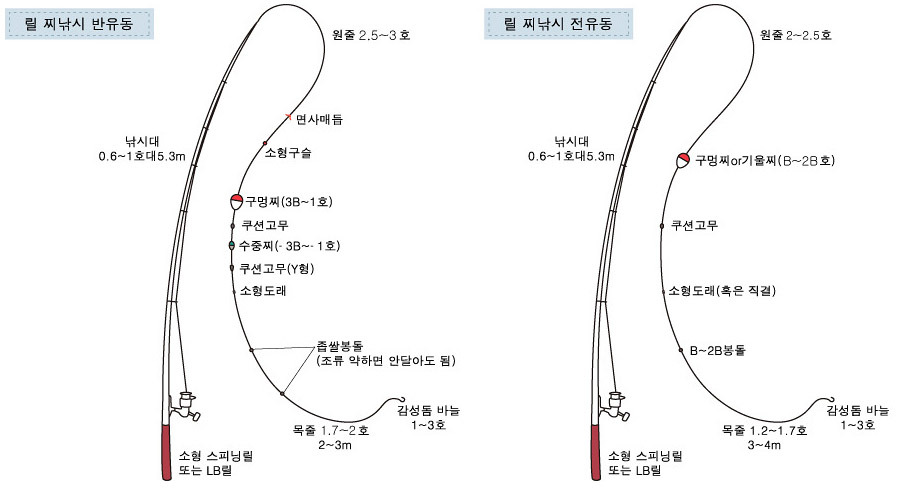

<link href="//maxcdn.bootstrapcdn.com/bootstrap/3.3.0/css/bootstrap.min.css" rel="stylesheet" id="bootstrap-css">
<link href="과제.css" rel="stylesheet" id="bootstrap-css">
<script src="//maxcdn.bootstrapcdn.com/bootstrap/3.3.0/js/bootstrap.min.js"></script>
<script src="//code.jquery.com/jquery-1.11.1.min.js"></script>
<!------ Include the above in your HEAD tag ---------->

 <!-- Static navbar -->
    <nav class="navbar navbar-inverse  navbar-static-top">
      <div class="container">
        <div class="navbar-header">
          <a class="navbar-brand" href="index.html">낚시왕Blog</a>
        </div>
        <div id="navbar" class="navbar-collapse collapse">
          <ul class="nav navbar-nav">
            <li class="active"></li>
            <li><a href="찌낚시.html">찌낚시</a></li>
            <li><a href="루어.html">루어</a></li>
            <li><a href="원투.html">원투</a></li>
            <li><a href="미끼와 종류.html">미끼와 종류</a></li>
          </ul>

          
          <ul class="nav navbar-nav navbar-right">
            <li><a href="회원가입.html">회원가입</a></li>
            <li class="active"><a href="로그인.html">로그인<span class="sr-only">(current)</span></a></li>

          </ul>
        </div><!--/.nav-collapse -->
      </div>
    </nav>

<section class="banner-section">
</section>
<section class="post-content-section">
    <div class="container">

        <div class="row">
            <div class="col-lg-12 col-md-12 col-sm-12 post-title-block">
               
                <h1 class="text-center">찌낚시에 대해서</h1><br>
                
            </div>

<div class="col-lg-9 col-md-9 col-sm-12">
<p class="lead"> 
<h3>
  찌낚시의 기본 채비에 대해 알려드리겠습니다.
</h3>
</p>
                 

     
<p></p>
<blockquote>
  <p>★ 간단한 구멍찌 낚시 상식 ★<br>
    1) 찌 부력을 정할땐 반드시 공략하고자 하는 수심층을 알고 결정한다.<br>
    2) 캐스팅은 항상 조류의 상류에다 던져서 조류의 하류쪽에서 입질 받는다.<br>
    3) 조류가 가지 않을땐 최대한 원투쳐서 밑채비가 다 가라앉을때까지<br>
    4) 포인트의 수심층을 어느정도 파악하거나, 모를땐 수심이 어떻게 되는지 반드시 알고 낚시를 해야한다.<br>
    5) 원줄은 반드시 목줄보다 한단계 이상 굵은걸 써야한다.<br>
    6) 수중찌의 선택은 특별한 상황이 아닌한 구멍찌와 같은 호수를 사용하는게 좋다.<br>
    7) 찌낚씨에서 가장 중요한건 미끼선행<br>
    8) 개인적으로 제일 중요하다고 생각하는 부분입니다. 바로 원줄관리!!!<br><br>

    릴 찌낚시의 장점 <br>
 - 포인트가 방대하다. (방파제, 방조제, 갯바위, 선상 어디든 가능)<br>
 - 거의 모든 어종을 잡을 수 있으며 감성돔, 참돔등 고급어종을 주로 노릴 수 있다.<br>
 - 장비가 가벼워 큰 고기가 아니더라도 당찬 손맛을 느낄 수 있다.<br>
 - 전층낚시가 가능하며 보다 공격적인 낚시를 할 수 있다.<br>
 - 찌(야간엔 전자찌)를 보며 낚시하는 재미가 솔솔하다. <br>
 - 방파제에서 남녀노소가 쉽게 즐길 수 있다. (망상어, 볼락, 고등어, 학꽁치 낚시등)<br>
 - 미끼는 크릴새우를 주로 사용하므로 처음 낚시를 하는 분들도 무리없이 소화해 낼 수 있다.<br><br>

  릴 찌낚시의 단점<br>
 - 다양한 소품이 필요하며 채비가 복잡하고 어렵다.<br>
 - 갯바위 낚시의 경우 출조비도 많이 들고 기본적으로 장비에 대한 비용이 많이 든다.<br>
 - 아이나 여성이 하기 쉽지 않다.<br>
 - 좋은 조과를 내기 위해선 배를 타고 섬으로 나갈수록 좋고 새벽일찍 움직여야 한다. (피곤하다.)<br>
 - 낚시하는 내내 서있어야 하는 경우가 많다.(체력이 많이 소모된다.)<br>
 - 많은 경험과 테크닉을 요구하는 편이다.<br>
  </p>
  
</blockquote>

<!-- Google tag (gtag.js) -->
<script async src="https://www.googletagmanager.com/gtag/js?id=G-MY1RNE63FZ"></script>
<script>
  window.dataLayer = window.dataLayer || [];
  function gtag(){dataLayer.push(arguments);}
  gtag('js', new Date());

  gtag('config', 'G-MY1RNE63FZ');
</script>

<div id="disqus_thread"></div>
<script>
    /**
    *  RECOMMENDED CONFIGURATION VARIABLES: EDIT AND UNCOMMENT THE SECTION BELOW TO INSERT DYNAMIC VALUES FROM YOUR PLATFORM OR CMS.
    *  LEARN WHY DEFINING THESE VARIABLES IS IMPORTANT: https://disqus.com/admin/universalcode/#configuration-variables    */
    /*
    var disqus_config = function () {
    this.page.url = PAGE_URL;  // Replace PAGE_URL with your page's canonical URL variable
    this.page.identifier = PAGE_IDENTIFIER; // Replace PAGE_IDENTIFIER with your page's unique identifier variable
    };
    */
    (function() { // DON'T EDIT BELOW THIS LINE
    var d = document, s = d.createElement('script');
    s.src = 'https://eldzz96.disqus.com/embed.js';
    s.setAttribute('data-timestamp', +new Date());
    (d.head || d.body).appendChild(s);
    })();
</script>
<noscript>Please enable JavaScript to view the <a href="https://disqus.com/?ref_noscript">comments powered by Disqus.</a></noscript>

<br>

             </div>
            <div class="col-lg-3  col-md-3 col-sm-12">
          
                <div class="list-group">
                    <a class="list-group-item active list-group-item-danger" href="https://slds2.tistory.com/3585?category=600117" target='_blank'><h4 class="list-group-item-heading">우리나라 수산자원의 금어기 및 포획금지체장</h4> <p class="list-group-item-text">꼭 확인하여 우리나라 수산자원을 지킵시다.</p> </a>
                    <a class="list-group-item list-group-item-success" href="https://slds2.tistory.com/1255?category=600117" target='_blank'><h4 class="list-group-item-heading">짜릿한 손맛, 낚시를 시작하다</h4> <p class="list-group-item-text">내게 맞는 낚시는 무엇일까?</p> </a>
                    <a class="list-group-item list-group-item-info" href="https://slds2.tistory.com/309?category=600117" target='_blank'> <h4 class="list-group-item-heading">갯바위에서 죽어가는 생명</h4> <p class="list-group-item-text">갯바위에 버려진 각종 오물과 쓰레기들에 심지어는 대변까지..</p> </a> 
                </div>

                <div class="well">
                    <div class="media"> <div class="media-left"> <a href="https://www.nongmin.com/news/NEWS/FLD/NWS/358749/view" target='_blank'>  </a> </div> <div class="media-body"> <h4 class="media-heading">감성돔 10만마리, 통영 앞바다로…</h4> 경남도, 수산자원 조성 박차.</div> </div>
                    <div class="media"> <div class="media-left"> <a href="https://news.sbs.co.kr/news/endPage.do?news_id=N1006902134&plink=ORI&cooper=NAVER" target='_blank'>  </a> </div> <div class="media-body"> <h4 class="media-heading">갯바위 낚시객 덮친 '7m 파도'...</h4> 구조대원도 휩쓸려 다쳐.</div> </div>
                    <div class="media"> <div class="media-left"> <a href="https://www.ytn.co.kr/_ln/0115_202209290512125215" target='_blank'>  </a> </div> <div class="media-body"> <h4 class="media-heading">끊이지 않는 방파제 추락사고...</h4> 안전 불감증 여전</div> </div>
                </div>
            </div>
        </div>
      

    </div> <!-- /container -->
</section>


      